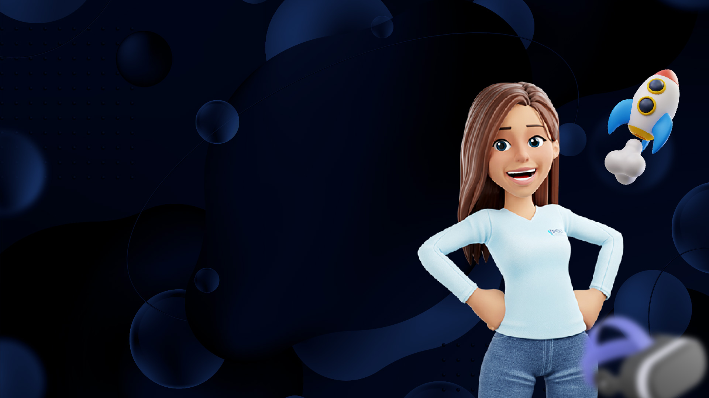
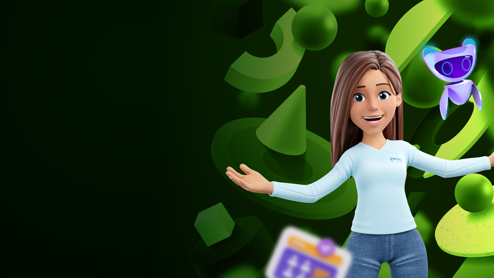

Es el conjunto de estrategias y secuencias didácticas que vinculan metodologías de trabajo, contenidos, materiales y actividades que desarrollarás cada semana.

2/8
Simuladores
Es un programa de software que modela los fenómenos de la realidad y te posibilitará construir conocimientos a partir de tu exploración.

3/8
Laboratorios Online
Es un entorno interactivo que te permitirá modificar parámetros y variables para experimentar cómo reacciona el sistema ante un cambio.
4/8
Juegos serios
Es un entorno interactivo que te permitirá realizar jugadas para la toma de decisiones apropiadas en una situación del quehacer profesional.
5/8
Software conceptual
Es un software donde ingresas información del entorno real, para realizar una serie de diagnósticos y análisis que te ayudará a la toma apropiada de decisiones, de acuerdo con los conceptos vistos.
6/8
Moocs
MOOC (Massive Open Online Course) Es un curso corto en línea, abierto y gratuito, orientado a que desarrolles aprendizajes sobre temas de interés personal o profesional.
Es un conjunto de herramientas online y gratuitas (software, guías, tutoriales, aplicativos entre otros), organizadas por categorías de acuerdo con tus necesidades de aprendizaje que emplearás durante toda la carrera.